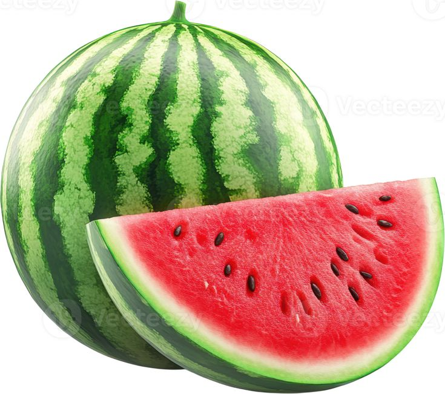

Watermelon

| Index |
|---|
| Short description |
| Nutritional value |
| Health benefits |
| Best time to eat |
| Who shoud avoid |
| Fun fact |
Short Description
Watermelon is a refreshing summer fruit with high water content. It helps hydrate the body and is enjoyed worldwide for its sweet taste.
Nutritional Value
| Nutrient | Amount |
|---|---|
| Calories | 30 kcal |
| Carbohydrates | 8 g |
| Water | 91% |
| Vitamin C | 14% |
| Lycopene | High |
| Potassium | 112 mg |
Health Benefits
- Prevents dehydration
- Low-calorie weight-friendly fruit
- Improves skin hydration
- Supports muscle recovery
- Improves heart health
Best Time to Eat
Watermelon is best eaten:
- Morning to afternoon
- On an empty stomach
Avoid eating watermelon:
- At night
- After meals
Who Should Avoid
- People with diabetes, in excess
- People with bloating issues
- Those with cold or cough
Fun Fact
- Watermelon is technically a berry
- Both seeds and rind are edible
- It was grown in Ancient Egypt